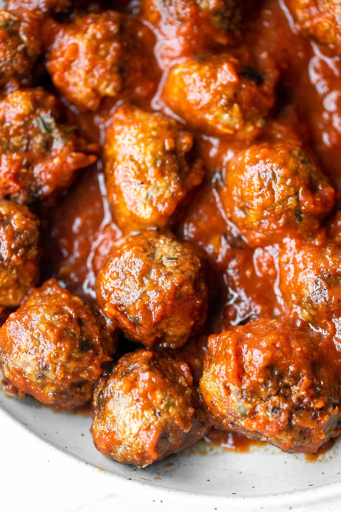

Italian Meatballs

Description
Juicy, flavourful meatballs in a tomato sauce. Make them in under 30 minutes!
Ingredients
Sauce
- ½ cup onion, finely chopped
- 1 tablespoon garlic, minced
- 1 (15 oz.) can crushed tomatoes (2 cups)
- ¼ cup tomato paste
- 3-4 bay leaves
- ½ teaspoon salt (or to taste)
- ½ teaspoon ground black pepper (or to taste)
Meatballs
- 1.5 lb. ground beef
- ¾ cup breadcrumbs
- ¼ cup milk
- 1 large egg
- 1 tablespoon garlic, finely chopped
- ½ cup fresh parsley, finely chopped
- ¼ cup Parmesan cheese, freshly grated
- 1 teaspoon Italian seasoning
- 1 teaspoon salt
- ½ teaspoon ground black pepper
- 2 tablespoons olive oil
Steps
- In a large mixing bowl, combine beef with breadcrumbs, milk, egg, garlic, parsley, Parmesan, Italian seasoning, salt and pepper. Mix well and form the mixture into a uniform consistency. Take 2 spoonfuls of the beef mixture at a time and roll them into meatballs. Set aside.
- Heat olive oil in a cast-iron skillet or shallow saucepan over medium-high heat for 2 minutes until the hot oil sizzles. Slowly add the meatballs and gently stir to cook until browned on all sides, about 6 to 8 minutes. Make sure to stir gently to prevent meatballs from disintegrating. Transfer the meatballs to a plate and set aside (Note that the meatballs are not fully cooked at this point).
- In the same skillet, add onion and garlic and sauté until fragrant, about 1 minute. Stir in crushed tomatoes, tomato paste and bay leaves, and season with salt and pepper.
- Return the meatballs to the skillet and bring the sauce mixture to a simmer over medium heat, stirring occasionally. Cover the lid and let it simmer for 8-10 minutes until the meatballs are fully cooked.
- Sprinkle with extra Parmesan if desired and serve immediately over pasta, rice, or mashed potatoes.
Odin Recipes Homepage